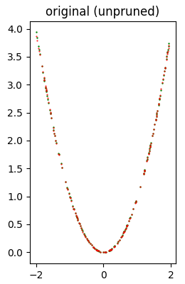
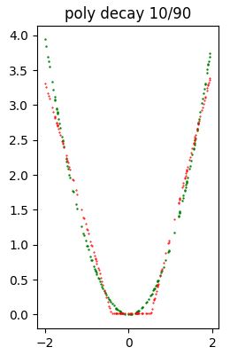
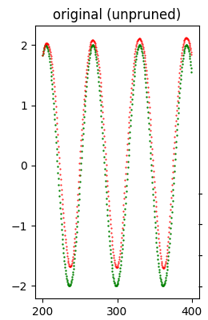

Pruning di reti neurali con TensorFlow
Lo scopo del pruning (ovverosia della potatura) dei pesi basato sulla magnitudine è quello di azzerare gradualmente,
durante la fase di addestramento, i pesi del modello meno significativi ottenendo così un certo grado di sparsità
nelle matrici dei pesi (sia kernel che bias) del modello.
Per sparsità di una matrice si intente la presenza di elementi uguali a zero nella matrice stessa: più sono presenti elementi uguali a zero
più la matrice ha un grado di sparsità maggiore; una matrice sparsa porta vantaggi in termini di occupazione di memoria e computazionali.
Per quanto riguarda la memoria può essere più facilmente compressa grazie alla presenza di elmenti ridondanti (gli zeri, appunto)
ed è questo in caso trattato in questo post; in generale le matrici sparse possono essere anche memorizzate in modo differente dai tradizionali
array NxM, memorizzando ad esempio in liste i valori diversi da zero con i relativi indici associati, ma non è questo il caso trattato in questo post.
Per quanto riguarda gli aspetti computazionali ci potrebbero essere degli spazi di miglioramento in quanto le moltiplicazioni con gli elementi uguali a zero
potrebbero essere saltate, ma anche questo caso non è trattato in questo post, in quando qui il focus è realizzare la sparsità
delle matrici di pesi al fine di ottenere compressione maggiore a fronte di una limitata perdita di qualità dell'inferenza (la predizione) del modello stesso.
Il post presenta una soluzione di pruning di pesi basato sulla magnitudine implementata tramite la libreria
TensorFlow Model Optimization
e mostra tre esempi di pruning applicati a tre differenti tipologie di reti: una rete full-connected (un MLP che realizza una regressione), una rete long-short-term-memory
(una rete LSTM che realizza un forecast di una serie temporale) e una rete convoluzionaria (una rete CNN che realizza un classificatore di immagini).
Il codice descritto da questo post richiede la versione 3 di Python e utilizza la tecnologia TensorFlow 2.x (per CPU o GPU) con Keras (che è già integrato dentro TensorFlow 2);
richiede oltre alla già citata TensorFlow Model Optimization altre librerie quali NumPy, SkLearn, Pandas, MatPlotLib e TensorFlow Datasets.
Per ottenere il codice si veda il paragrafo Download del codice completo in fondo a questo post.
Il codice della soluzione
Il cuore della soluzione proposta è il file trim_insignificant_weights.py
che implementa due classi e alcune funzioni.
Le classi sono:
-
AttemptConfig: che costituisce l'elemento di una griglia di ricerca (implementata dagli esempi mostrati successivamente) che procede per tentativi; tale classe implementa due proprietà: il nome del tentativo e l'oggetto di TensorFlow Model Optimization che implementa la politica di pruning. Attualmente le politiche supportate sono:PolynomialDecayeConstantSparsity. -
AttemptInfo: che implementa una serie di proprietà per memorizzare varie informazioni relative a un modello addestrato. Precisamente: il numero totale di pesi, il numero dei pesi uguali a zero (e per differenza quelli diversi da zero), la size del modello originale salvato in .h5, la size del file .h5 zippato, la size del file .tflite, la size del file .tflite zippato con i relativi coefficienti di compressione e inoltre altre informazioni riguardanti l'inferenza, quali i valori di test predetti e l'errore tra i valori predetti e quelli attesi.
-
print_attempt_infos: prende in ingresso una lista di oggetti di tipoAttemptInfo, ottenuta dall'esecuzione completa della grigia di ricerca, e scrive sullo standard output, in modo user-friendly, il contenuto informativo dei vari oggettiAttemptInfopresenti nella lista. -
inspect_weigths: prende in ingresso un modello keras, ne ispeziona i pesi (sia kernel che bias) e scrive sullo standard output il numero dei pesi per ciascun layer del modello indicando quanti di essi sono uguali a zero e quanti diversi da zero. -
retrieve_size_of_model: prende in input un modello keras e restituisce la size del file .h5 che si ottiene salvando il modello e la size dello stesso file zippato. -
retrieve_size_of_lite_model: prende in input un modello keras e restituisce la size del file .tflite che si ottiene convertendo e salvando il modello per TensorFlow Lite; inoltre, come sopra, restituisce la size dello stesso file zippato. -
build_pruning_model: prende in input un modello keras originale (che non ha subito alcun processo di pruning) e restituisce un wrapper del modello applicando il metodoprune_low_magnitudeper preparare il modello a subire un processo di pruning durante la fase di training. -
retrieve_callbacks_for_pruning: restituisce la callbackUpdatePruningStepnecessaria alla fase di addestramento con pruning. -
extract_pruned_model: prende in input un wrapper per il pruning di un modello e rimuove il wrapper, tramitestrip_pruninge restituisce il modello sottostante che risulta pronto per l'inferenza.
Gli esempi
Gli esempi mostrati in questo post seguono tutti un medesimo schema: il codice di esempio prepara un dataset (che è generato sinteticamente negli esempi #1 e #2,
mentre nell'esempio #3 è utilizzato un dataset di TensorFlow Datasets,
che viene diviso in due pezzi: uno per il training e l'altro per il test (a volte vi è un terzo pezzo per la validazione);
quindi viene costruito un modello di rete neurale ed eseguito un processo di addestramento.
Questo modello è denominato modello originale e le informazioni su di esso vengono inserite in un'istanza della classe AttemptInfo.
A questo punto viene creata la griglia di ricerca, ovverosia una lista di instanze delle classi PolynomialDecay e ConstantSparsity
inizializzate in modo differente; ogni configurazione è memorizzata in una istanza di AttemptConfig.
Il codice dell'esempio cicla sulla griglia di ricerca e per ogni AttemptConfig crea un wrapper per il pruning del modello originale
chiamando la funzione build_pruning_model e addestra questo modello, usando gli stessi iper-parametri dell'addestramento del modello originale
ma con una callback in più ottenuta chiamando retrieve_callbacks_for_pruning.
Durante l'addestramento, il modello subisce un processo di pruning; terminato addestramento, viene chiamata la funzione extract_pruned_model
per rimuovere il wrapper e ottenere il modello sottostante su cui si effettua l'inferenza dei dati di test
e infine si memorizzano in una nuova instanza di AttemptInfo tutte le informazioni su tale modello, in particolare la size del file .h5 zippato
e la size del file .tflite zippato e l'errore calcolato confrontanto la predizione sui dati di test e i veri valori di test.
Le varie instanze di AttemptInfo sono raccolte in una lista e alla fine dello script di esempio sono visualizzate le informazioni
dei vari tentativi per consentire di confrontare il fattore di compressione ottenuto per ogni tentativo a fronte di quanta perdita di qualità del modello.
Per gli esempi #1 e #2 è anche mostrato, per ogni tentativo, un grafico cartesiano con due curve: in verde il dataset di test, in rosso la predizione del tentativo corrente
e questo consente di avere una visione della perdita di qualità al crescere dell'attività di pruning.
Esempio #1: rete neurale full-connected
Il codice di questo esempio è il file example1.py.
Il dataset utilizzato da questo esempio è un dataset sintetico così generato:
fx_gen_ds = lambda x: x**2 #generating function of the dataset
x_dataset = np.arange(-2., 2, 0.005, dtype=float)
y_dataset = fx_gen_ds(x_dataset)Per eseguire questo scripy Python lanciare il seguente comando:
$ python example1.pyDense, con un totale di 4289 pesi addestrabili.Qui la struttura della rete:
Model: "mlp_regression_model"
_________________________________________________________________
Layer (type) Output Shape Param #
=================================================================
input_1 (InputLayer) [(None, 1)] 0
_________________________________________________________________
dense (Dense) (None, 32) 64
_________________________________________________________________
dense_1 (Dense) (None, 64) 2112
_________________________________________________________________
dense_2 (Dense) (None, 32) 2080
_________________________________________________________________
dense_3 (Dense) (None, 1) 33
=================================================================
Total params: 4,289
Trainable params: 4,289
Non-trainable params: 0
_________________________________________________________________Adams
e MeanSquaredError quale funzione di loss. Le proprietà di questo modello (che chiamiamo modello originale in quanto non sottoposto a pruning)
sono visibili nell'output del programma:Model: original (unpruned)
Total number of weights: 4289
Total number of non-zero weights: 4280
Total number of zero weights: 9
Unzipped h5 size: 37272 bytes
Zipped h5 size: 18155 bytes (compression factor: 51.29%)
Unzipped tflite size: 7232 bytes
Zipped tflite size: 5781 bytes (compression factor: 20.06%)
Error (loss) value: 1.379212E-04L'immagine seguente mostra a colpo d'occhio che la qualità dell'inferenza è molto buona.

Dataset di test (in verde) e inferenza (in rosso) prodotta con il modello originale (che non ha subito alcun pruning).
Segue quindi l'esecuzione della griglia di ricerca che esegue 11 tentativi di applicazione di pruning, 6 con
PolynomialDecay variamente inizializzati
e 5 con ConstantSparsity variamente inizializzati. A titolo di campione, si mostra il risultato di uno degli 11 tentativi, precisamente const sparsity 0.5
(comunque i risultati di tutti i tentativi sono disponibili sullo standard output):Model: const sparsity 0.5
Total number of weights: 4289
Total number of non-zero weights: 1775
Total number of zero weights: 2514
Unzipped h5 size: 37272 bytes
Zipped h5 size: 10832 bytes (compression factor: 70.94%)
Unzipped tflite size: 7232 bytes
Zipped tflite size: 2953 bytes (compression factor: 59.17%)
Error (loss) value: 3.109528E-04L'immagine seguente mostra a colpo d'occhio che la qualità dell'inferenza è piuttosto buona.

Dataset di test (in verde) e inferenza (in rosso) prodotta con il modello const sparsity 0.5.
Terminati tutti i tentativi, lo script di esempio mostra il recap di tutti i tentativi; il primo elemento del recap è relativo al modello originale.
*** Final recap ***
Attempt name Size h5 (Comp. %) Error (loss)
original (unpruned) 18155 ( 51.29%) 1.379212e-04
poly decay 10/50 11958 ( 67.92%) 1.981978e-03
poly decay 20/50 11928 ( 68.00%) 9.621178e-05
poly decay 30/60 10544 ( 71.71%) 2.460897e-04
poly decay 30/70 9039 ( 75.75%) 2.291273e-03
poly decay 40/50 12254 ( 67.12%) 8.707970e-05
poly decay 10/90 5782 ( 84.49%) 3.172360e-02
const sparsity 0.1 10858 ( 70.87%) 5.406314e-04
const sparsity 0.4 10856 ( 70.87%) 4.125351e-04
const sparsity 0.5 10832 ( 70.94%) 3.109528e-04
const sparsity 0.6 10476 ( 71.89%) 2.269561e-04
const sparsity 0.9 5792 ( 84.46%) 9.419761e-04A titolo di campione l'immagine seguente mostra un modello che ha subito un pesante pruning e conseguentemente la qualità dell'inferenza è notevolmente peggiorata rispetto al modello precedentemente mostrato.

Dataset di test (in verde) e inferenza (in rosso) prodotta con il modello poly decay 10/90.
Nota: Data la natura stocastica della fase di addestramento, i singoli specifici risultati possono variare. Si consideri di eseguire la fase di addestramento più volte.
Esempio #2: rete neurale long-short-term-memory
Il codice di questo esempio è il file example2.py.
Il dataset utilizzato da questo esempio è una serie temporale sintetica così generata:
ft_gen_ts = lambda t: 2.0 * np.sin(t/10.0) #generating function of the time series
t_train = np.arange(0, 200, 0.5, dtype=float)
y_train_timeseries = ft_gen_ts(t_train)
t_test = np.arange(200, 400, 0.5, dtype=float)
y_test_timeseries = ft_gen_ts(t_test)Per eseguire questo scripy Python lanciare il seguente comando:
$ python example2.pyQui la struttura della rete:
Model: "long_short_term_memory_model"
_________________________________________________________________
Layer (type) Output Shape Param #
=================================================================
input_1 (InputLayer) [(None, 6, 1)] 0
_________________________________________________________________
lstm (LSTM) (None, 80) 26240
_________________________________________________________________
dense (Dense) (None, 1) 81
=================================================================
Total params: 26,321
Trainable params: 26,321
Non-trainable params: 0
_________________________________________________________________Adams e MeanSquaredError quale funzione di loss.
Le proprietà di questo modello (che chiamiamo modello originale in quanto non sottoposto a pruning)
sono visibili nell'output del programma:Model: original (unpruned)
Total number of weights: 26321
Total number of non-zero weights: 26321
Total number of zero weights: 0
Unzipped h5 size: 122096 bytes
Zipped h5 size: 99952 bytes (compression factor: 18.14%)
Unzipped tflite size: 42480 bytes
Zipped tflite size: 29678 bytes (compression factor: 30.14%)
Error (loss) value: 1.289916E-01L'immagine seguente mostra a colpo d'occhio che la qualità del forecast è buona.

Dataset di test (in verde) e forecast (in rosso) prodotto con il modello originale (che non ha subito alcun pruning).
Segue quindi l'esecuzione della griglia di ricerca che esegue 11 tentativi di applicazione di pruning, 6 con
PolynomialDecay variamente inizializzati
e 5 con ConstantSparsity variamente inizializzati. A titolo di campione, si mostra il risultato di uno degli 11 tentativi, precisamente poly decay 40/50
(comunque i risultati di tutti i tentativi sono disponibili sullo standard output):Model: poly decay 40/50
Total number of weights: 26321
Total number of non-zero weights: 13322
Total number of zero weights: 12999
Unzipped h5 size: 122096 bytes
Zipped h5 size: 63464 bytes (compression factor: 48.02%)
Unzipped tflite size: 42480 bytes
Zipped tflite size: 21277 bytes (compression factor: 49.91%)
Error (loss) value: 8.439505E-01L'immagine seguente mostra a colpo d'occhio che la qualità del forecast è relativamente buona.

Dataset di test (in verde) e il forecast (in rosso) prodotto con il modello poly decay 40/50.
Terminati tutti i tentativi, lo script di esempio mostra il recap di tutti i tentativi; il primo elemento del recap è relativo al modello originale.
*** Final recap ***
Attempt name Size h5 (Comp. %) Error (loss)
original (unpruned) 99952 ( 18.14%) 1.289916e-01
poly decay 10/50 62316 ( 48.96%) 8.029442e-01
poly decay 20/50 62268 ( 49.00%) 1.122432e-01
poly decay 30/60 53409 ( 56.26%) 2.103334e+00
poly decay 30/70 43866 ( 64.07%) 3.067956e+00
poly decay 40/50 63464 ( 48.02%) 8.439505e-01
poly decay 10/90 22154 ( 81.86%) 4.263138e+00
const sparsity 0.1 96429 ( 21.02%) 2.983370e+00
const sparsity 0.4 72670 ( 40.48%) 3.378339e+00
const sparsity 0.5 63657 ( 47.86%) 3.714817e-01
const sparsity 0.6 54506 ( 55.36%) 4.406884e+00
const sparsity 0.9 22818 ( 81.31%) 4.847150e+00A titolo di campione l'immagine seguente mostra un modello che ha subito un pesante pruning e conseguentemente la qualità dell'inferenza è notevolmente peggiorata rispetto al modello precedentemente mostrato.

Dataset di test (in verde) e forecast (in rosso) prodotto con il modello const spartsity 0.4.
Nota: Data la natura stocastica della fase di addestramento, i singoli specifici risultati possono variare. Si consideri di eseguire la fase di addestramento più volte.
Esempio #3: rete neurale convoluzionale
Il codice di questo esempio è il file example3.py.
Il dataset utilizzato da questo esempio è il dataset Flowers di TensorFlow;
qui il codice che effettua il download di tale dataset:
(train_ds, val_ds, test_ds), metadata = tfds.load(
'tf_flowers',
split=['train[:80%]', 'train[80%:90%]', 'train[90%:]'],
with_info=True,
as_supervised=True,
)
total_number_of_training_images = 8
total_number_of_validation_images = 6
total_number_of_test_images = 7$ python example3.pyNell'output ottenuto, proprio all'inizio, si osserva la struttura del modello, che è una rete con una serie di layer Conv2D e MaxPooling2D seguiti da un layer Dense, poi un Flatten, poi un Dropout (per evitare l'overfitting) e infine un Dense; ha con un totale di 1658565 pesi addestrabili.
Qui la struttura della rete:
Model: "cnn_model"
_________________________________________________________________
Layer (type) Output Shape Param #
=================================================================
input_1 (InputLayer) [(None, 180, 180, 3)] 0
_________________________________________________________________
conv2d (Conv2D) (None, 178, 178, 32) 896
_________________________________________________________________
max_pooling2d (MaxPooling2D) (None, 89, 89, 32) 0
_________________________________________________________________
conv2d_1 (Conv2D) (None, 87, 87, 32) 9248
_________________________________________________________________
max_pooling2d_1 (MaxPooling2 (None, 43, 43, 32) 0
_________________________________________________________________
conv2d_2 (Conv2D) (None, 41, 41, 32) 9248
_________________________________________________________________
max_pooling2d_2 (MaxPooling2 (None, 20, 20, 32) 0
_________________________________________________________________
flatten (Flatten) (None, 12800) 0
_________________________________________________________________
dense (Dense) (None, 128) 1638528
_________________________________________________________________
dropout (Dropout) (None, 128) 0
_________________________________________________________________
dense_1 (Dense) (None, 5) 645
=================================================================
Total params: 1,658,565
Trainable params: 1,658,565
Non-trainable params: 0
_________________________________________________________________Adams e SparseCategoricalCrossentropy(from_logits=True) quale funzione di loss.Nota: Il valore dell' errore mostrato nell'output del programma tuttavia non è il valore della funzione di loss ottenuta confrontando il dataset di test con la predizione, come era per per gli esempi #1 e #2, ma è il numero delle immagini classificate correttamente diviso il numero totale di immagini del dataset di test.
Le proprietà di questo modello (che chiamiamo modello originale in quanto non sottoposto a pruning) sono visibili nell'output del programma:
Model: original (unpruned)
Total number of weights: 1658565
Total number of non-zero weights: 1658565
Total number of zero weights: 0
Unzipped h5 size: 6665816 bytes
Zipped h5 size: 6151486 bytes (compression factor: 7.72%)
Unzipped tflite size: 1669728 bytes
Zipped tflite size: 1358843 bytes (compression factor: 18.62%)
Error (loss) value: 3.950954E-01Segue quindi l'esecuzione della griglia di ricerca che esegue 11 tentativi di applicazione di pruning, 6 con
PolynomialDecay variamente inizializzati
e 5 con ConstantSparsity variamente inizializzati. A titolo di campione, si mostra il risultato di uno degli 11 tentativi, precisamente poly decay 40/50
(comunque i risultati di tutti i tentativi sono disponibili sullo standard output):Model: poly decay 40/50
Total number of weights: 1658565
Total number of non-zero weights: 829624
Total number of zero weights: 828941
Unzipped h5 size: 6665816 bytes
Zipped h5 size: 3859572 bytes (compression factor: 42.10%)
Unzipped tflite size: 1669728 bytes
Zipped tflite size: 978984 bytes (compression factor: 41.37%)
Error (loss) value: 4.087193E-01Terminati tutti i tentativi, lo script di esempio mostra il recap di tutti i tentativi; il primo elemento del recap è relativo al modello originale.
*** Final recap ***
Attempt name Size h5 (Comp. %) Error (loss)
original (unpruned) 6151486 ( 7.72%) 3.950954e-01
poly decay 10/50 3781226 ( 43.27%) 4.223433e-01
poly decay 20/50 3786548 ( 43.19%) 4.168937e-01
poly decay 30/60 3238918 ( 51.41%) 4.523161e-01
poly decay 30/70 2602091 ( 60.96%) 4.441417e-01
poly decay 40/50 3859572 ( 42.10%) 4.087193e-01
poly decay 10/90 1286371 ( 80.70%) 4.741144e-01
const sparsity 0.1 5891419 ( 11.62%) 4.604905e-01
const sparsity 0.4 4400747 ( 33.98%) 4.386921e-01
const sparsity 0.5 3830963 ( 42.53%) 4.414169e-01
const sparsity 0.6 3246370 ( 51.30%) 4.441417e-01
const sparsity 0.9 1285383 ( 80.72%) 4.659401e-01Nota: Data la natura stocastica della fase di addestramento, i singoli specifici risultati possono variare. Si consideri di eseguire la fase di addestramento più volte.
Download del codice completo
Il codice completo è disponibile su GitHub.
Questo materiale è distribuito su licenza MIT; sentiti libero di usare, condividere, "forkare" e adattare tale materiale come credi.
Sentiti anche libero di pubblicare pull-request e bug-report su questo repository di GitHub oppure di contattarmi sui miei canali social disponibili nell'angolo in alto a destra di questa pagina.